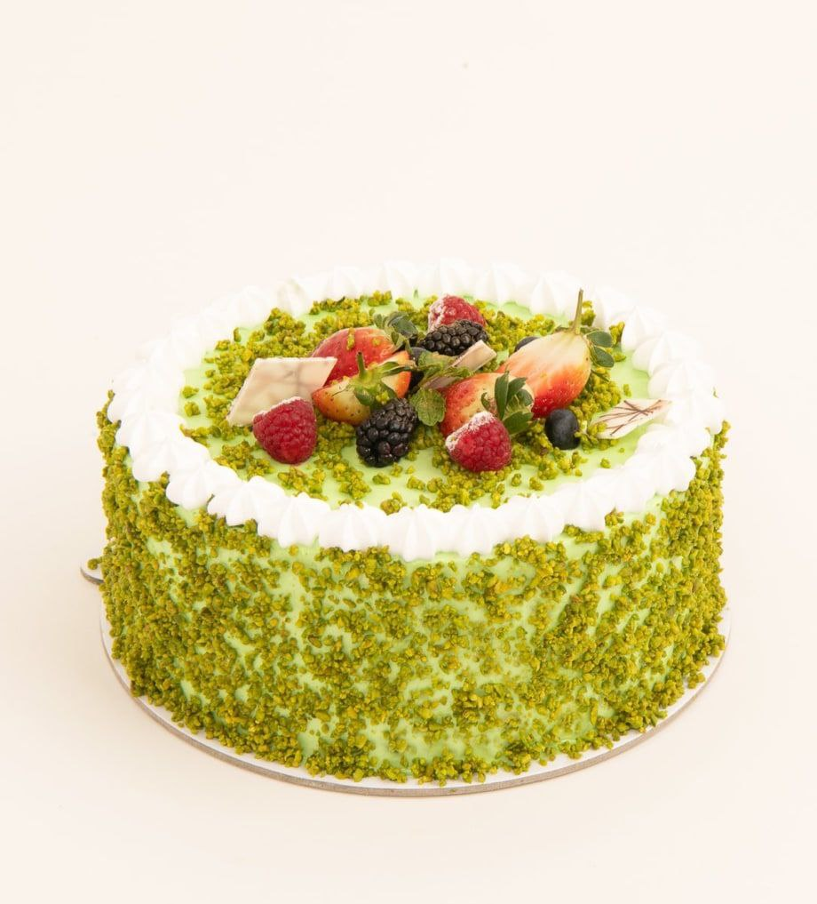
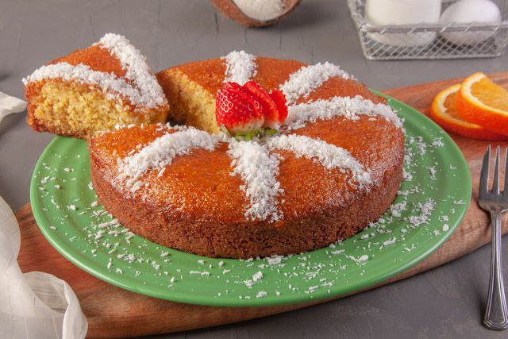
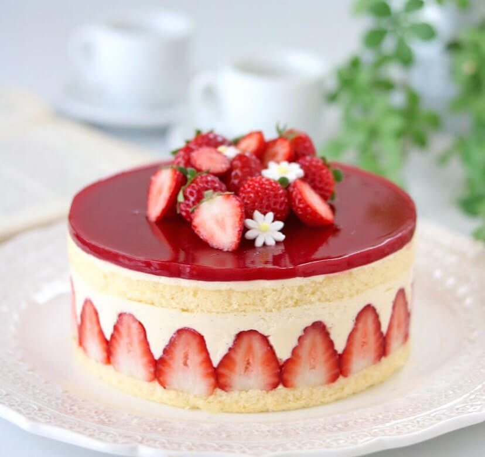
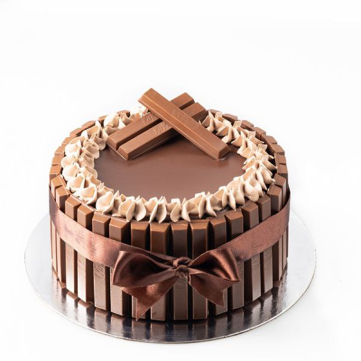
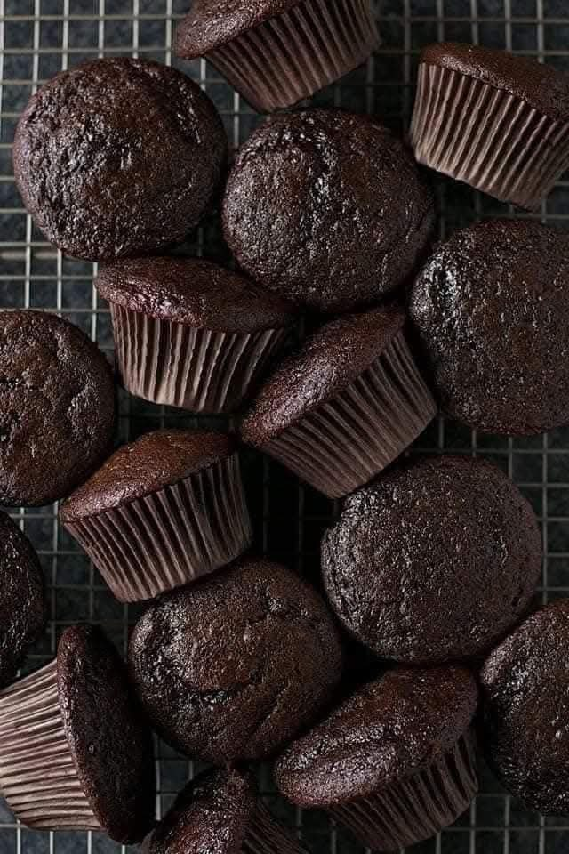
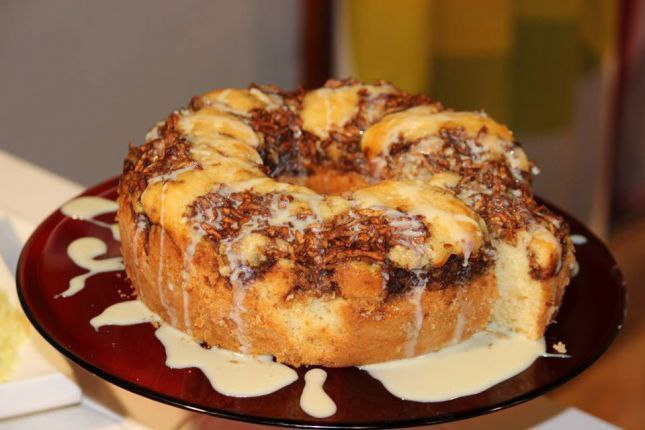

- الصفحة الرئيسية
-
 حلويات باردة
حلويات باردة
-
 حلويات الكيك
حلويات الكيك
-
 حلويات شرقية
حلويات شرقية
-
 حلويات إيطالية
حلويات إيطالية
- نصائح المطبخ
حلويات باردة
حلويات الكيك
حلويات شرقية
حلويات إيطالية

نخفق البيض، الملح والفانيلا والسكر جيداً حتى يتضاعف حجم الخليط، نضيف الزيت تدريجيا على شكل خليط، ثم الحليب. نخلط بيكينغ باودر مع الدقيق ونضيفه على الخليط تدريجيا. نأخذ جزء من الخليط ونضيف له كريمة البستاشيو في قالب الكيك مدهون بالزبدة ومرشوش بالدقيق، نضع طبقة العجين الابيض ثم عجينة البستاشيو ثم الابيض، وبسكين او عود نحرك حتى نحصل على شكل جميل. او بالإمكان وضع طبقة عجين ابيض ثم بستاشيو ثم ابيض ثم بستاشيو ثم ابيض ندخل الكيكة لفرن ساخن بدرجة 170 ولمدة 40 دقيقة، ثم نزينها بالبعض من كريمة البستاشيو ومبروش الفستق

نضرب البيض مع السكر والفانيلا جيداً حتى يتضاعف حجمه. نضيف الحليب والزيت مع الخفق المستمر.نضيف جوز الهند. نخلط المكونات الناشفة مع بعضها البعض. ثم نضيفها بالتدريج للخليط.ندخلها فرن ساخن مسبقاً على درجة حرارة 160 لمدة نصف ساعة.عند انتهاء المدة، نخرج الكيك من الفرن ونسقيه بالشربات الباردة.تزين الكيكة بجوز الهند والورد المجفف بحسب الرغبة. لتحضير الشربات: ضعي كوب عصير البرتقال ونصف كوب من السكر على النار، واتركي المكونات تغلي على النار مدة 10 دقائق.

نضع جميع المكونات يإستثناء الطحين والفراولة ونخلط جيداً نضع الطحين على فترات ونخلط حتى تتماسك نضع الفراوله وندهن جيداًنضع الخليط بصينيهنباشر للخبز على نار هادئه من أسفلوفي النهاية نشغل 3دقائق على الوجه ومن ثم نخرجها حتى تبرد ونقوم بالتزين بالكريمة وحبات الفريز
اول خطوه بنعمل حمام مائي لمعلب اللوتس وبعدها بنطحن البسكويت ومع ٥.ملعقة كبيرة زبده وبطحنهن مع بعض حتى يتماسك البسكويت مع الزبده بوضعو بقالب على شكل دائري وبالبراد لساعه ليتماسك اكتر معانا تاني خطوه بنجهز الكريمه (الحشوه) بخفق الكريمه لسبع دقائق حتى تتماسك وبضيف السكر والحليب البارد بشكل تدريجي ومع القشطه والفانيلا باودر بخفق شوي وبسكبو فوق خليط البسكويت بعد ما يتماسك وبزين بمعلب اللوتس بعد ما سيحتو بالماء المغلي وبزينو بشوي بسكويت.

في الخلاط الكهربائي، يخلط الحليب، الزيت، السكر والكاكاو ثم يؤخذ منه كوب ويوضع في الثلاجة.يوضع البيض، الدقيق، البيكنج بودر والفانيليا على باقي الخليط ثم يخفق جيداً.يوضع الخليط في قالب أو صينية مدهونة بالزيت أو الزبدة.يوضع القالب في فرن محمى مسبقاً على 150 درجة يخرج من الفرن بعد إستوائه ويوضع كوب الخليط الذي رفع جانباً على الوجه و يمكن التزين حسب الرغبة.

توضع البيضة والسكر والحليب والسمن او الزبدة والفانيليا في الخلاط الكهربائي ونخلطهم لمدة 4 دقائق يوضع الخليط في وعاء غميق ثم ينخل فوقه الدقيق والنشاء والبيكنج باودر ورشة الملح بالتدريج ويقلب حتى يمتزج تماماً ويصبح الخليط ناعم يصب نصف الخليط في قوالب ويوضع شوكولا بيضا بالنص ثم يضاف الجزء الثاني ويوضع في فرن ساخن مسبقاً على درجة حرارة 180 درجةفي الرف الأوسط لمدة نصف ساعة .

.في الخفاقة نخلط البيض مع السكر جيدا ثم نضيف الفانيلا والحليب والزيت ونخفق جيدا. 2. نضيف الطحين والبيكنغ باودر والملح ونخفق المزيج جيد. 3. نسكب مزيج الكيك المخفوق بقالب مدهون زيت وطحين ونضع على الوجه التفاح المخلوط مع السكر والقرفة وندخلها الفرن على حرارة 180 لمدة 35 دقيقه ثم تترك لتبرد 4. نضع عليها صلصة الشوكولاتة أو الحليب المكثف المحلى (حسب رغبتك).